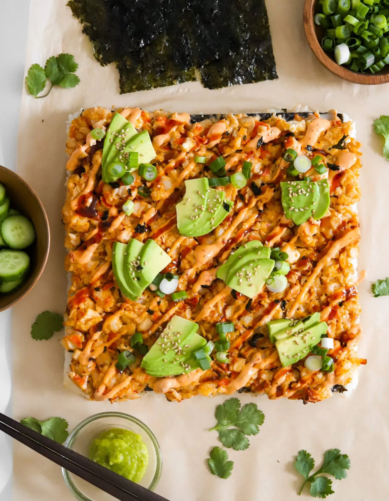

Sushi Bake
Home

Original recipe: Moribyan.com
Description:
This is a delicious and warm sushi bake recipe! It has 5 stars and 39 reviews!
Sushi rice:
Ingredients:
- Sushi rice
- Salt
- Rice vinegar
- Granulated white sugar
- Sesame oil
Steps:
- Start off by soaking and rinsing the sushi rice to remove some of the starch.
- After that, bring it to a boil with water and salt using a 2:3 cup ratio of rice to water. Simmer covered for 20 minutes and turn off the heat and leave it covered for another 10 minutes.
- In a small bowl, whisk together rice vinegar, granulated sugar, and sesame oil.
- Heat it in the microwave for 30 seconds to dissolve the sugar. Stir the rice and then add the mixture and mix well. Set aside until later when we assemble the dish!
Spicy mayo
Steps:
This one is simple! All you have to do is take the following ingredients in a bowl and mix them together.
- Mayo
- A little lemon juice
- Sesame oil
- Sugar
- Sriracha or Sambal
Crab and shrimp filling:
Steps:
Same as the last section, this ones pretty simple as well! Just mix all of the followings into a large bowl.
- Imitation crab meat, finely chopped or shredded
- Raw shrimp, chopped small
- Cream cheese, room temp
- Mayo
- Sriracha or sambal
- Sesame oil
- Low sodium soy sauce
- Lime juice
Assembling and baking:
Steps:
- Preheat oven to 425°F.
- To a 9 x 9 baking pan or casserole dish, add the sushi rice to the bottom. You don’t need to spray the bottom with oil but if you’d like, you may.
- Then add a nori seaweed sheet on top of the rice. Or you can substitute with furikake
- After that, add the crab and shrimp mixture on top and pop in the oven to bake for about 15 minutes until golden on top.
- Optional: After the 15 minutes is over, you can broil it for a couple extra minutes until golden on top. Just make sure to watch it closely so it doesn't burn!
- Once out of the oven, top it off with avocado, green onions, unagi sauce, and spicy mayo and enjoy!